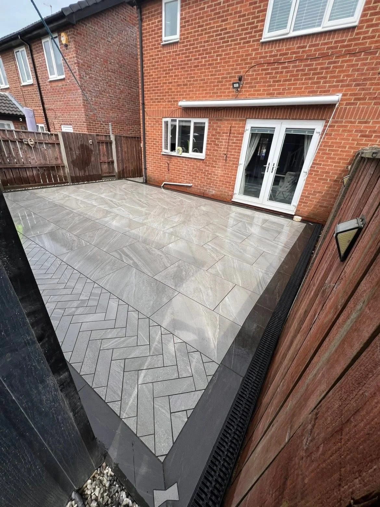

DURHAM · PAVING, LANDSCAPES & GROUNDWORKS
Patios & paving
Discuss patios, paths, paving layouts and finishing details with Pearson Paving.
PEARSON PAVING
A space to enjoy.
Share photographs, approximate dimensions and the look you have in mind. The portfolio includes large-format paving, herringbone details, contrasting borders and steps.
Discuss your project →FROM THE PORTFOLIO
Explore the details.
YOUR NEXT OUTDOOR PROJECT
Start with
your ideas.
Tell Pearson Paving about your patio, driveway or garden plans. Share your postcode and a few details to begin the conversation.
PEARSON PAVING · DURHAM
Ready for
a fresh outlook?
Talk to Pearson Paving about your outside space.